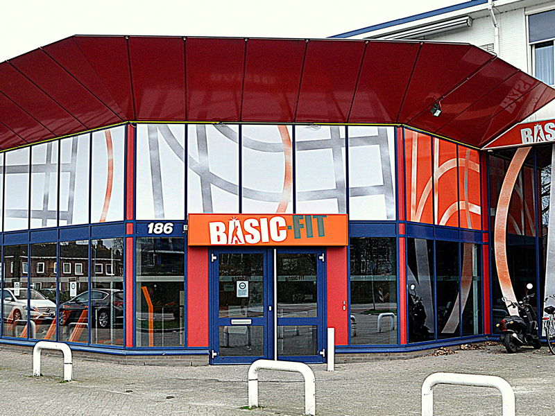

Introduction
Hello everyone!
Welcome to the tutorial about fitting generalized linear models in .
You are on the 4th day of Bootcamp by now and might start to feel very tired. Come on! Push it just a little harder, and you will be (statistically) fit as never before! ^_^

Checking installation
Before we run these tutorials, we first quickly make sure you have all of the required packages installed for this tutorial.
R Version
You need to have installed R version 4.1.1 and this tutorial is going to check it for you. Please hit the Run Code button.
check_R()R Studio Version
You need to have installed RStudio version 1.4.1717 or above. Let’s check by clicking Run Code:
check_RStudio()Packages
You need to have a few packages installed. Click the Run Code to check. It will check whether you have the required packages installed and will attempt to install any missing packages in case there are any.
check_pkgs()Generalizing the linear model
The predicted values of an OLS by definition can range from
\(Real: \{ -\infty, +\infty \}\)
However, this cannot be possible if we consider outcome variables that are categorical, ordinal, count, or dichotomous. Therefore, only models with numeric outcome variables can produce predicted values in this range.
Also, OLS should have an error that is normally distributed around a mean of 0. This condition is not produced when the dependent variable is not numeric.
These two problems occur since the relationship between the outcome variable and the predictors is not linear unless the outcome variable is numeric.
For these reasons, we need to use some mathemagic to bring back in line those categorical, ordinal, count, or dichotomous variables that lost the straight way (^_^)!
The OLS definition is
\(y_i \sim Normal(\mu_i, \sigma_i)\)
\(\mu_i = \alpha + \beta + x_i\)
This definition is specifically looking at the effects that we cannot have anymore: - normal distribution - prediction of an average value
Suppose we substitute those two parts with a mathemagical spell that turns various functions shapes into linear and predicts a value compatible with the situation. In that case, we can expand this linear prediction to the universe and beyond!
Hence we generalize the definition as
\(y_i \sim D(f(\eta_i), \theta)\)
\(\eta_i = X\beta\)
Here, we don’t look at a normal distribution, but we look at the distribution \(D\) that would work for us considering the features of the outcome variables. This distribution is connected to a function \(f(\eta_i)\) that links the distribution of the outcome variable to the predictors in a linear way. In fact, this is the link function that you can consider as a sort of Google Translate since it puts these two different parts of the story in rapid communication.
When we have this setup, we can explore linear relationships about any variables by changing the distribution D and the link function!
Of course, it doesn’t necessarily mean that we will find a correlation, but at least we can try! It’s already a lot, isn’t it?
Obviously, we can also run an OLS with the Generalized linear model setup.
Specifying a GLM in R
While you can run an OLS using the lm(), you need to use the glm() function to run the generalized version. Both functions are from the stats package, which is part of the base language. For you, this means that you don’t need to call the function with stats::glm(). However, if you do call it that way, it will also run without any issue.
The model is specified similarly at the lm() one, but few differences. Let’s work with this example:
You have a toy data set with three variables that you need to model. Intuitively, y is the variable you need to set as the outcome, while x1 and x2 are your predictors.
Let’s take a look at what kind of data is that.
summary (demodata)So… looking at the summary we know that y, x1, and x2 are numeric variables.
What do we do?
ToyModel <- glm(formula = y ~ x1 + x2 + x1*x2,
data = demodata,
family = gaussian(link = identity))
summary(ToyModel)Our ToyModel (please, don’t imagine a teddy bear on a catwalk!) has nothing statistically significant. We don’t care! We just want to see how to specify it!
So, let’s get to understand the bits and pieces.
DISCLAIMER If an exploratory data analysis is always a must, in the GLM is more than a must! It’s like taking your dog out before going to bed. If you don’t do it, nothing will work in your house (since the dog will drive you crazy, and s/he would be right!) In GLMs, if you don’t know what kind of outcome variable you are using, you cannot even specify the model!
‘formula’ is specified in the same as
lm(). Entirely.‘data’ is specified in the same way too.
‘family’ and ‘link’. This is the new bit. With family, you tell which distribution you are relying on. With link, you tell which link function you want to use.
You use the same functions to visualize results. In this case,
summary(), but there are others. For instancejtools::summandtexreg::screenreg. Each of them has pros and cons, and it is up to you to choose your favorite as long as it displays the info you need.
Also, even if this model is the same as an OLS, you have a different output in the summary of results. For example, can you see that the R-square is not provided? You can still calculate it if you want to, but the glm class of models is not provided.
The glm is also uses a different algorithm than the lm. While the OLS uses an algorithm that computes the line that minimizes the distance between the observed points (least square method), the GLM solves the problem using Maximum Likelihood Estimation (LME). We don’t have the time to go into the details of the algorithm here, but you can check Wikipedia to get an idea, if you want to know more.
Logistic Regressions
Since there are several GL models, we will focus on a specific one to get into the details: the logistic regressions. This is the GLM you use with a dummy outcome variable (I can guarantee it is not stupid even if it is a dummy!).
The other GLMs will require some different specifications, but you are ready for the real fight if you can nail the logistic regression!
We define a logistic regression as
\(logit(P_i) = log(\frac{P_i}{1-P_i}) = \alpha + \beta_1X_1 + ... + \beta_nX_n\)
To estimate the odds of either one category of the outcome variable or the other to take place.
The background story
Dummy is a nickname for a binary categorical variable, also called dichotomous such as
- Yes or no
- Black or white
- Win or lose
- Male or female
- … you name it!
We know two crucial things about logit models:
- they have a dummy dependent variable
- they are estimating linear effects.
Obviously, if we estimate a logistic model, the predicted values are defined as:
\(Integers: \{0, 1 \}\)
What would be the meaning of a model that predicts the odds of having a baby girl or a baby boy and provides a prediction of 3.5? It must be either 1 or 2.
When we use statistical models, we are referring to the understanding of the reason why we observe something, rather than the observation of repeated behaviors (patterns).
The study of why something happens is called causal inference (you know that already!) since it deals with inferring (estimating) the cause(s) of some phenomenon of interest.
Logistic models explain why an outcome dummy variable is observed in a certain way due to some concurrent phenomena that affect it. Why in the world are there more women than men? That’s the kind of question. That’s the reason why we say that an explanatory variable predicts an outcome variable.
Scientists explain phenomena by testing hypotheses.
You measure something relevant for you: my dog is often barking like crazy
You formulate a hypothesis on the reason why he is barking He might be hungry
You test your hypothesis mmm, maybe I don’t feed him enough…
Against a null hypothesis My dog is fine, and he barks like crazy for fun
He might be barking for many reasons other than being hungry such as that he wants to go for a walk (the phenomenon is more complex), but there is a certain probability or (odds) associated with your hypothesis being correct. This hypothesis can be numerically tested by measuring how many days in a month your dog barks like crazy (outcome variable), and how much food he gets every day (explanatory variable). If you don’t find any association between these two variables, well, your dog is barking for fun, and we cannot reject the null hypothesis!
This is the hypothesis testing mindset! oh… and please, if you have a pet, feed her/him even if s/he is annoying!!
Getting a Job in Data science
Ok, enough with toy examples and stories! Come on! Hands on data!
We have a data set with 50 observations about the Data Science job market. Our general research question is:
What are the factors that lead you to be successful at getting a data science job?
Let’s explore the data.
summary(DSjob_market)We have four variables:
- DS_job: whether our respondents get or don’t get a job in data science (dummy)
- DS_skills: how much our respondents are prepared for the job (numeric, continuous)
- anxiety: how much our respondents are worried about not getting a data science job (categorical)
- age: age of respondents (numeric, continuous)
Still, we don’t know anything about the categories of anxiety. Let’s explore it further.
table(DSjob_market$anxiety)Now we know that anxiety has four categories:
- low anxiety
- medium-low anxiety
- medium-high anxiety
- high anxiety
Ok, now we can move on a formulate more specific research questions. Let’s focus on data science skills, getting a job in data science, and anxiety while considering age as a control.
A control variable is not part of our hypothesis but might be essential to recreate the situation that explains the causal relationship that generated your outcome variable. Hence MUST be in the model.
Focusing on the three main pieces of information we have, we could specify several research questions. For instance:
- Does getting a job in data science and data science skills predict the presence of anxious thoughts?
- Does getting a job in data science and anxiety predict data science skills?
- Does the level of anxiety and the data science skills predict the probability of getting a job in data science?
Even if the data and our great mathematical and statistical skills allow us to fit three models to address these three research questions, it is not necessarily a good idea to do it. First, it would be called ‘fishing’ into the data since you try every combination until you fish something meaningful. Second, questions 1 and 2 sound a little detached from reality. Why do data science skills make someone anxious (1)? Why should an anxious person be good at data science (2)? Unless we see other evidence, these make no sense. Hence, once more: Your statistical analysis needs to be theoretically driven rather than data driven.
You need to use your theoretical knowledge to support your question with evidence, and you need to persuade your audience that your question makes sense. You also need to provide an attempted answer to your question, informed by the literature you read on the topic. That’s a hypothesis.
Now, we move on with question 3, assuming that we spent quite some time reading on the topic. According to the (imaginary) literature (that we pretend we know by heart), it is more likely that people good at data science get a job in data science since good skills allow you to get good jobs. At the same time, if people work really hard very often, they are anxious about getting what they want. Hence anxiety might be a proxy for commitment.
In accordance, we can formulate the hypothesis:
- H1 The level of anxiety and the level of skills in data science are predictors of getting a job in the field.
H1, obviously expects to find effects, and it is the opposite of a null hypothesis of no effect that we call H0
- H0 The level of anxiety and the level of data science skills are not correlated to getting a job in data science.
H1 is a two-tailed hypothesis since we do not state whether more anxiety and more numeracy lead to more success or the other way around (one-tailed options). We are open to both positive and negative correlations.
Ok, what do we do now? We explored the data (well, we should do way more than that, but let’s assume we did), formulated hypotheses, decided on our outcome variable and predictors, and included a control variable.
Are we ready to fit the model?!
NOOOOOOOOOOOOO
We are not ready at all!!!! We need to prepare the variables first.
Data Preparation
In order to get the data ready for the model, we need to make sure they are assigned to the correct class.
Hence, we will check the class and, if it isn’t the right one, we will change it.
Can you make sure that
- the outcome variable is numeric or integer and expressed in 0, 1
- DS_skills is numeric
- the categorical variable is a factor
- the covariate is numeric
# outcome variable
# DS_skills
# Categorical Variable
# Covariate# outcome variable
class(DSjob_market$DS_job)
table(DSjob_market$DS_job)
# DS_skills
class(DSjob_market$DS_skills)
# Categorical Variable
class(DSjob_market$anxiety)
DSjob_market$anxiety <- as.factor(DSjob_market$anxiety)
# Covariate
class(DSjob_market$age)Are we ready to fit the model now? Nope! We still have to set a reference category for the factor variable. Let’s compare to the low anxiety category all the other groups!
levels(DSjob_market$anxiety)
DSjob_market$anxiety <- relevel(DSjob_market$anxiety, ref = "low")Fitting the model
Now we can finally move on fitting a bunch of models to test H1. We add the explanatory variables one by one, nesting a series of models.
First, we consider only Data science skills as an explanatory variable.
JobModel1 <- stats::glm(formula = DS_job ~ DS_skills,
family = binomial(link = logit),
data = DSjob_market)
summary(JobModel1)Have you paid attention to the way I specified the family? The logistic regression needs a binomial distribution.
The binomial distribution can be connected to several link functions. Hence we need to tell that we want the logit one.
We do so, adding a specification to the distribution family = binomial(link = logit).
Ok, let’s move on to nest a second model. This time we insert anxiety.
JobModel2 <- stats::glm(formula = DS_job ~ DS_skills + anxiety,
family = binomial(link = logit),
data = DSjob_market)
summary(JobModel2)Third, we add our control variable age to this third model:
JobModel3 <- stats::glm(formula = DS_job ~ DS_skills + anxiety + age,
family = binomial(link = logit),
data = DSjob_market)
summary(JobModel3)We are done fitting! Aren’t you curious to know what this bunch of numbers means?
Reading results
We successfully run our models, but coding is the easy part of this game. The real point is: Was our hypothesis correct? (imagine a little kid crying and jumping while yelling that he wants to be right!!! XD)
We need to look at a bunch of indicators. Some are exactly the same as OLS; others differ.
Same as OLS
- p-value
- sign of the coefficient
Different from OLS
- Model Comparison
- Model Goodness of fit (GOF)
- Coefficients interpretation
We will not talk again about the p-value and the sign of the coefficient since you already did that in Bootcamp-Day 1. We will focus on the remaining 3, starting with comparing the models to select the best one.
Model Comparison
We can inspect the three models at the same time using the function screenreg() from the texreg package that automatically places your nested models’ results next to each other, ready for comparison.
texreg::screenreg(list(JobModel1, JobModel2, JobModel3))First of all, note that having our results next to each other helps get an overview of our nested models. Model comparison is really important, since our goal is to understand which combination of explanatory variables predicts our outcome variable more accurately.
To compare the models, we have two indicators:
- AIC. Akaike information criterion
- BIC. Bayesian information criterion
In both cases, the lowest, the better.
Model one is the best since it has the lowest scores both for AIC and BIC. Model two is slightly better than model three according to both indicators. Both models two and three don’t seem to be great since they perform less well than model one. It means that the two variables that we added are not improving the model fit. In practice that data science skills is a much better explanatory variable than anxiety and sex. It does make sense. Still, let’s go with model 2 since we still want to know what happens with anxiety.
Goodness of Fit (GoF)
The GoF you used for the OLS cannot be used here since this model violates the assumptions on which these measures rely.
Still, it is the same game that we are playing: minimize the error and maximize the power of our prediction.
We do that by looking at the relationship between residuals and predicted values.
Quick quiz 1
Quick quiz 2
Careful here, since our link function used a logarithmic scale, our predicted values will still be in that scale; hence, we need to transform them in order to interpret them.
The easy way is to use ready-made functions.
The function fitted() will get us the values that are already transformed.
JUST LIKE THAT
fitted(JobModel2)If I tell you that predict() can get you the predicted value in the log scale can you feed the model to the function and find them? For me? ^_^
predict(JobModel2)Now let’s extract the residuals, should we? They will also be in the log scale; hence we need to specify “how we want them.” Watch!
The first is in the log scale; the second is not!
residuals(JobModel2)
residuals(JobModel2, type = "response")Since we got to this point, what do we do to learn how to see whether the model has a good fit or not? We do a binned plot!
bootcamp2021::binnedplot(fitted(JobModel3),
residuals(JobModel3, type = "response"),
nclass = NULL,
xlab = "Expected Values",
ylab = "Average residual",
main = "Binned residual plot",
cex.pts = 0.8,
col.pts = 1,
col.int = "gray")The grey lines represent ± 2 Standard Errors bands, which we expect to contain about 95% of the observations. You want your points to be inside the binned shape.
Looking at this plot, we can say that the standard error is larger at the center. Hence the model predicts the extremes a bit better. Also, the model is not predicting well in some cases since some points are outside of the confidence interval (the binned shape). However, the majority of the dots are inside the binned shape; hence it seems that our model is reliable enough to move on! Let’s be honest, it’s not the best model, but it is fine!
We can move on to interpreting coefficients!
Interpreting Coefficients
As much as for residuals and fitted values, in order to interpret coefficients, we need to make a transformation and compute the ODDs ratios. AKA: estimating the odds of getting this cool data science job!
- odd ratios (OR) <- exponentiation of the coefficient.
Let’s calculate odd ratios for the job model 2. Still, the question is, shall we focus on each and every coefficient?
And by now, you should know that the answer is only on the significant ones (provided that we carefully discussed what significant means choosing the right p-value threshold in agreement with what we are looking for)
Let’s exponentiate!
exp(JobModel2$coefficients)And now? How do we interpret the odds ratios?
Ok, first of all, if you are still unsure about p-values, check the material for Bootcamp days one and two.
Let’s interpret odds ratios only on the coefficient that are statistically significant.
- Data Science Skills
- Anxiety High
You interpret them this way:
An increase of 1 in the predictor increases the log odds by \(\beta\) (log odds), making the odds of category one taking place \(exp(\beta)\) times larger than category zero.
In our case:
An increase of 1 in the Data Science Skills increases the log odds by 0.54 (log odds), and it makes the odds of getting a data science job 1.8 times larger than not getting the job.
When we have a categorical variable, it does not make sense to talk about an increment of 1 in the predictor, right? It’s a category! How can it be incremented?
Hence we comment on this result in another way: Being in the group with high anxiety decreases (since the sign is minus) the log odds by -2.54, making the odds of getting a job in data science 0.78 times smaller than for the people with low anxiety (the reference category).
It makes sense that data science skills predict the success of getting a data science job, right? It also makes sense that people that are not anxious perform better than anxious people when they go for job interviews. Right?
Well, our hypothesis was looking for evidence of some effects and not asking how strong the effect is. Am I right?
Ok, hence, unless our hypothesis includes this effect, it is ok only to comment on whether the effect is there or not without focusing on its intensity.
Then, this is your interpretation compass!
IF beta > 0 and stat. signif.–> X increases P(1) and decreases P(0)
IF beta < 0 and stat. signif. –> X decreases P(1) and increases P(0)
IF beta NOT stat. signif. –> X does not affect P(1) and P(0)
The data science skill coefficient is larger than 0; hence it belongs to case 1. Our model suggests we can reject the null hypothesis of no effects since we observe a statistically significant prediction that an increase in data science skills positively correlates with the probability of getting a data science job.
The high anxiety coefficient is smaller than 0; hence it belongs to case 2. In this case, we can say that having high anxiety is correlated with a decrease in the probability of getting a job in data science if compared to the group with low anxiety (reference category). Therefore, we can reject the null hypothesis in this case too.
Even if it is more common to formulate a hypothesis that only looks for effects than those that look for the intensity of the effect, you still need to do both. Hence, even if you won’t need to estimate odds ratios every time you run a model, you still need to learn it since sometimes you might need it.
Quick Quiz
Let’s make sure you understand what we are doing here.
I’m giving you a play box here. Here you can run the code to answer the questions. Would you please answer them for me? ^_^
One more
Well done you! After lifting weight with R-thur all week long you are super fit!

Homeplay
1) Alternative university scenario
Let’s assume that we run the same survey among the students and former students of an alternative data science university. We have a data frame with the same structure but different values.
Your data set is called “DSjob_marketAltU”.
1a) Can you run the same three models and before?
1b) Can you make a binned plot with model one (call it “AltUJobModel1” )
AltUJobModel1 <- stats::glm(formula = DS_job ~ DS_skills,
family = binomial(link = logit),
data = DSjob_marketAltU)
AltUJobModel2 <- stats::glm(formula = DS_job ~ DS_skills + anxiety,
family = binomial(link = logit),
data = DSjob_marketAltU)
AltUJobModel3 <- stats::glm(formula = DS_job ~ DS_skills + anxiety + age,
family = binomial(link = logit),
data = DSjob_marketAltU)
texreg::screenreg(list(AltUJobModel1, AltUJobModel2, AltUJobModel3))
bootcamp2021::binnedplot(fitted(AltUJobModel1),
residuals(AltUJobModel2, type = "response"),
nclass = NULL,
xlab = "Expected Values",
ylab = "Average residual",
main = "Binned residual plot",
cex.pts = 0.8,
col.pts = 1,
col.int = "gray")1c) How do you interpret this binned plot?
The Media and Elections data set
You have a data set that contains data about citizens, their political interest and how much they engage with media during election time.
Let’ take a look at the variables
summary(MediaElec)We have
- TVtime (dummy) do you watch TV shows about politics during election time? YES/NO
- ONLINEtime (categorical) How much political information do you look up online? 1-5 (quantity: small, small-med, medium, med-large, large)
- PolInt (ordinal) how much are you interested in politics? 1-11
- ElecInt (categorical) how much are you interested in elections? 1-4 (low, low-med, high-med, high)
- ProbLeft (ordinal) what is the probability that you would vote for a left-wing party? 1-11
- ProbRight (ordinal) what is the probability that you would vote for a right-wing party? 1-11
- age
- gender
- education
You can choose between two research questions.
Does the interest in politics, together with the time spent online looking for political information, predict the probability of watching political shows during election time?
Does the interest in politics together with interest in elections predict the probability of watching political shows during the election time?
TIP: outcome variable is TVtime in both cases.
- formulate a hypothesis
- recode the variables appropriately (don’t forget to set the reference category)
- specify nested models adding one predictor per time and the five control variables (ProbLeft, ProbRight, age, gender, edu) in the last nested model.
- compare models and select the best one
- estimate predicted values and residuals
- make a binned plot and comment on it
- interpret odds ratios
- interpret log-odds
- conclude by stating whether your hypothesis is supported or not
You can run your model in the box below or work in Rstudio, loading the data with
MediaElecData <- bootcamp2021::MediaElecData
Bonus question
Can you manually estimate the predicted value for respondent 1312?
That’s all folks
Hey Ohhhhh!!!! It’s great that you got to the end of this tutorial! I hope you had fun!!!